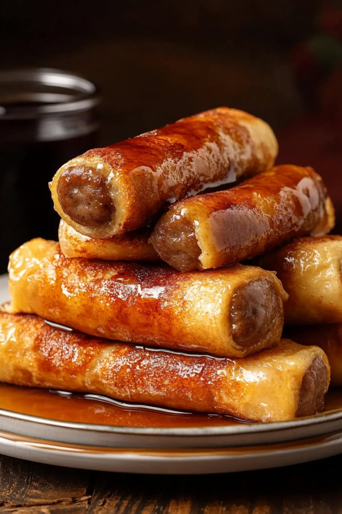

The exact lasagna recipe

Ingredients
- White Bread
- Sausage Links
- Eggs
- Whole Milk
- Ground Cinnamon & Nutmeg
- Vanilla Extract
- Unsalted Butter
How to make Sausage French Toast Roll-Ups
These Sausage French Toast Roll-ups are my ideal grab-and-go breakfast. They bundle your morning cravings into
one irresistible bite!
Golden, buttery French toast wraps around juicy sausage for the ultimate sweet and savory combo. I love dunking
them in warm maple syrup—it’s SO satisfying.
Steps
- Make batter: Whisk the eggs, milk, cinnamon, nutmeg, and vanilla in a medium bowl until
well blended.
- Flatten bread: Using a rolling pin, flatten the bread slices and cut off the crusts.
- Roll: Roll the flattened bread tightly around a cooked sausage link. Repeat.
- Dip: Coat the roll-ups in the egg mixture. Let excess batter drip off.
- Cook: Cook the roll-ups in a buttered skillet for 2-3 minutes per side, turning frequently.
Work in batches, adding more butter as needed.
- Serve: Serve the roll-ups warm with maple syrup or powdered sugar.
Go back to Homepage